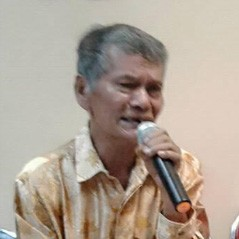
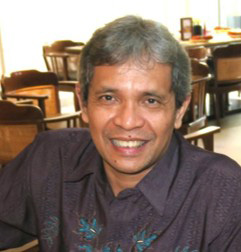
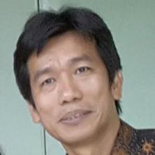

Pendiri
Dewan Pembina
-
Prof. Bonar Pasaribu adalah pensiunan dosen dari Fakultas Perikanan dan Ilmu Kelautan IPB. Lulusan sarjana dari IPB Bogor dan lulusan Magister dari Tokyo University of Fisheries dan Dokor dari School of Marine Science and Technology Tokai University, Japan. Pernah menjabat sebagai Direktur Marine Science Education Project Direktorat Jenderal Pendidikan Tinggi, Indonesia. Aktif dalam kegiatan pemberdayaan Masyarakat.
Prof. Dr. Bonar P. Pasaribu Anggota -

Dr. Djisman Manurung adalah pensiunan dosen dari Fakultas Perikanan dan Ilmu Kelautan IPB. Lulusan sarja dari IPB Bogor, lulusan Magister dari Tokyo University of Fisheries dan Dokor dari Tokyo University Japan. Pernah menjabat sebagai Ketua Program Studi Pascasarjana Teknologi Kelautan di IPB. Aktif dalam kegiatan pemberdayaan Masyarakat.
Dr. Djisman Manurung Ketua -
Prof. Pollung Siagian adalah pensiunan dosen dari Fakultas Peternaiakn IPB. Lulusan sarjana dan magister dari IPB dan lulusan Dokor dari Universitas Losbanos Filippina. Aktif dalam penelitian dibidang peternakan dan menjadi konsultan bidang peternakan dan memberi pelatihan tentang peternakan di berbagai daerah di Indonesia. Aktif dalam kegiatan pemberdayaan Masyarakat.
Prof. Dr. Pollung Siagian Anggota

Dewan Pengawas
-

Dr. Bintang Simangunsong adalah dosen di Fakultas Kehutanan IPB. Lulusan Sarjana dan Magister dari IPB dan lulusan Doktor dari The University of Wisconsin-Madison USA. Aktif sebagai tenaga ahli dibidang Kehutanan dan dalam kegiatan pemberdayaan Masyarakat.
Dr. Bintang Simangunsong Anggota -
Dr. Togu Manurung adalah dosen di Fakultas Kehutanan IPB. Lulusan Sarjana dan Magister dari IPB dan lulusan Doktor dari The University of Wisconsin-Madison USA. Pernah menjabat sebagai Staf Ahli Kementerian Kehutanan. Aktif dalam kegiatan pemberdayaan Masyarakat.
Dr. Togu Manurung Ketua -
Ir. Jainur Manurung, MM adalah pensiunan dari Kementerian Kelautan dan Perikanan. Lulusan Sarjana dari IPB Bogor dan Magister dar universitas swasta di Jakarta. Pernah menjabat sebagai Kepala Pelabuhan Perikanan di berbagai daerah di Indonesia. Aktif dalam kegiatan pemberdayaan Masyarakat.
Ir. Jainur Manurung, MM Anggota


Dewan Pengurus
-
Ir. Maeolop Sianipas bekerja sebagai Direktur Konsultan di Bogor. Lulusan Sarjana dari IPB Bogor. Pernah menjadi pimpinan proyek berbagai kegiatan konsultan. Aktif dalam berbagai kegiatan pemberdayaan Masyarakat.
Ir. Marolop Sianipar Sekretaris -
Prof. Jonson Lumban Gaol adalah dosen dari Fakultas Perikanan dan Ilmu Kelautan IPB. Lulusan Sarjana dan Pascasarjana (S2 dan S3) dari IPB Bogor. Saat ini menjabat sebagai Ketua Program Studi Pascasarjana Teknologi Kelautan di IPB. Aktif dalam kegiatan pemberdayaan Masyarakat.
Dr. Jonson Lumban Gaol Ketua -

Dr. Parluhutan Manurung adalah dosen di Universitas Indonesia. Lulusan Sarjana dari ITB Bandung dan lulusan Doktor dari The University New Castle UK. Pernah menjabat sebagai salah satu Direktur di Badan Informasi Geospasial. Aktif dalam kegiatan pemberdayaan Masyarakat.
Dr. Parluhutan Manurung Bendahara